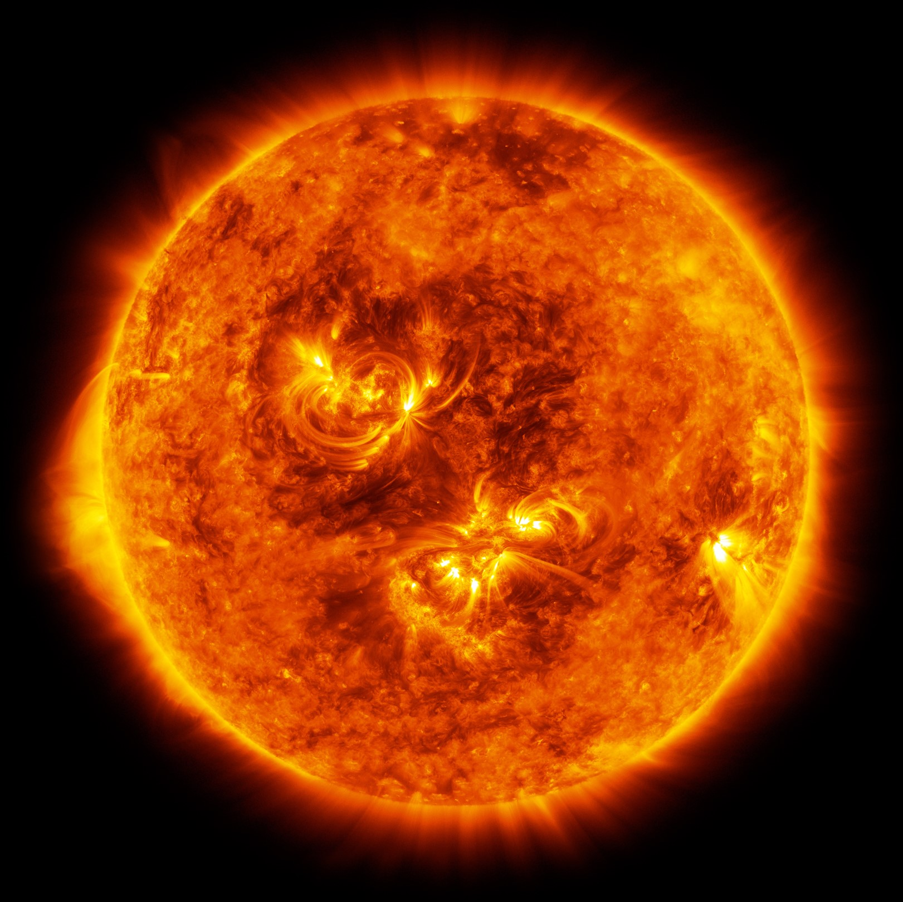

Die Sonne
Die Sonne ist der Stern im Zentrum unseres Sonnensystems. Sie enthält 99.86% der Masse des Sonnensystems und liefert die Energie für fast alles Leben auf der Erde.
- Durchmesser: 1.392.700 km
- Masse: 1,989 × 10^30 kg
- Oberflächentemperatur: 5.500°C